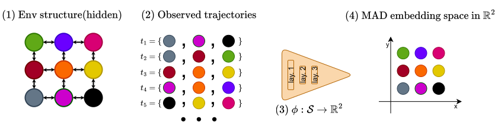
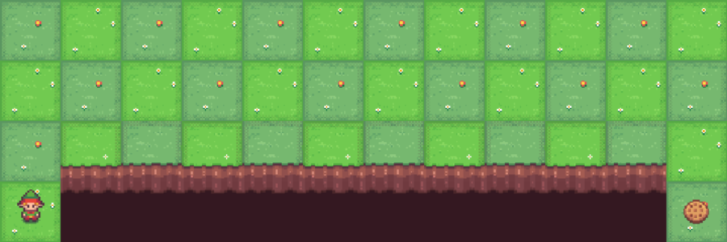
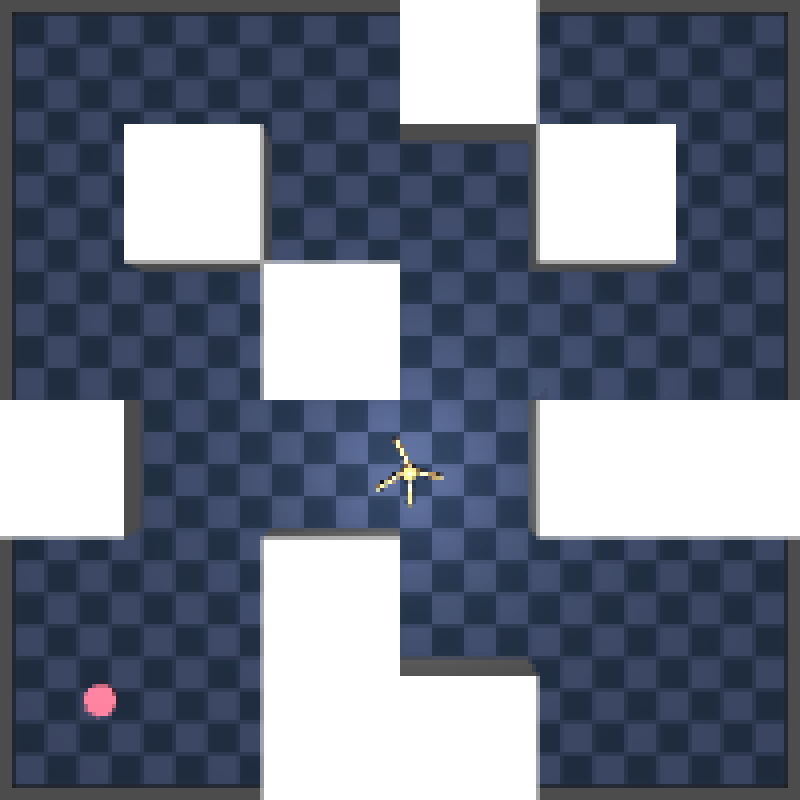
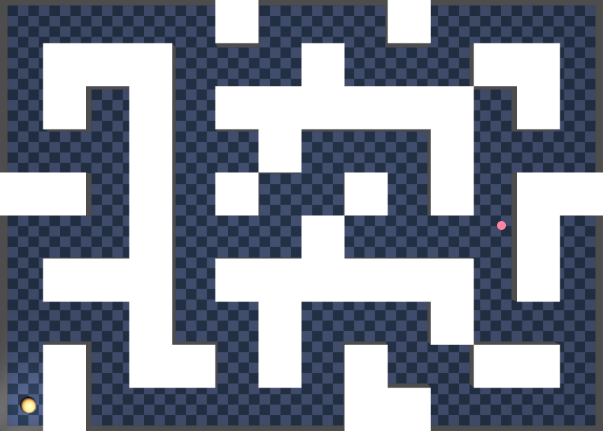
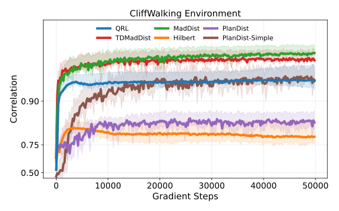
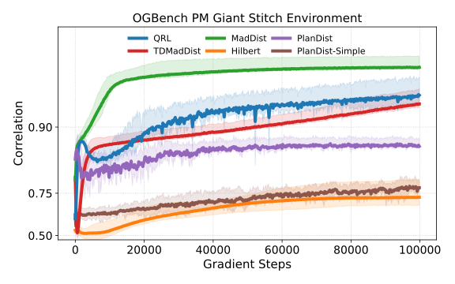
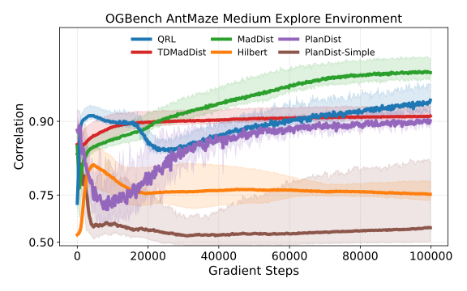
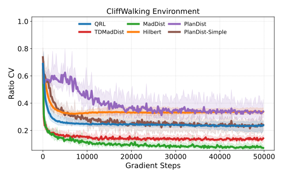
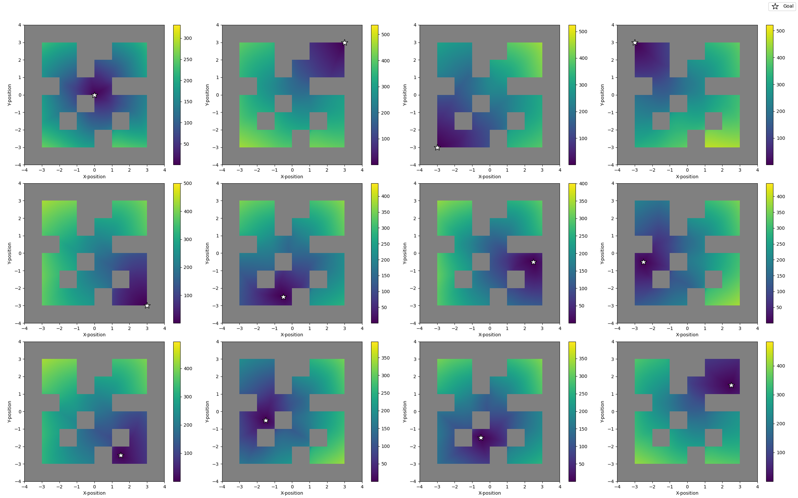

Universitat Pompeu Fabra, Barcelona | University of Bath
We present a framework for learning the Minimum Action Distance (MAD) — the minimum number of actions needed to move between two states. The resulting embedding gives a dense, geometrically meaningful notion of progress that is useful for goal-conditioned RL, reward shaping, and planning.
Learned entirely offline from state-only trajectories

Consider a Markov decision process \(\mathcal{M} = \langle \mathcal{S}, \mathcal{A}, \mathcal{R}, \mathcal{P}, \mathcal{D}, \gamma \rangle\). For a fixed policy \(\pi\), define the minimum hitting time from state \(s\) to state \(s'\) as
The Minimum Action Distance is the smallest such hitting time over all policies:
In deterministic MDPs the MAD is always realizable by some policy; in stochastic MDPs it is a lower bound on the number of steps required by any policy, since it depends only on the support of the transition kernel rather than exact transition probabilities. This makes MAD robust to stochasticity and agnostic to the data-collection policy.
Let \(R \subseteq \mathcal{S} \times \mathcal{S}\) be the one-step reachability relation: \((s, s') \in R \iff \exists\, a \in \mathcal{A}\) such that \(\mathcal{P}(s' \mid s, a) > 0\). When \(\mathcal{S}\) is finite, \(d_{\mathrm{MAD}}\) is exactly the all-pairs shortest-path distance on the directed graph \((\mathcal{S}, R)\) with unit edge costs, computable via Floyd–Warshall.
\(d_{\mathrm{MAD}}\) can equivalently be characterized as the unique solution to a constrained optimization problem over the space of all pairwise distance functions:
Intuitively: the one-step constraint pulls directly-connected states close together, the triangle inequality propagates that local structure globally across multi-step paths, and maximizing the sum pushes every pair as far apart as the constraints allow — which is exactly the shortest-path distance. This formulation is provably the unique pointwise-maximal feasible \(d\), but it is intractable to optimize directly: for a continuous or large state space the states cannot be enumerated, and the triangle-inequality constraint alone grows cubically in \(|\mathcal{S}|\).
Rather than imposing the triangle inequality as an explicit constraint, we enforce it by construction. We learn a state embedding \(\phi_\theta : \mathcal{S} \to \mathbb{R}^k\) and define distances through a quasimetric \(d_q\) applied to embedded states:
A quasimetric satisfies identity (\(d_q(x,x)=0\)), non-negativity, and the triangle inequality (\(d_q(x,z) \le d_q(x,y) + d_q(y,z)\)) by definition — but, unlike a metric, it need not be symmetric. Because \(d_\theta\) is a quasimetric for any choice of \(\phi_\theta\), the Identity and Triangle Inequality constraints are satisfied automatically for free, and the optimization collapses to a single remaining constraint:
This is still idealized, since the one-step relation \(R\) is generally unknown in offline data. The only information available is upper bounds from observed trajectories: for a trajectory \(\tau = (s_0, \dots, s_T)\) and indices \(i < j\), state \(s_j\) is reachable from \(s_i\) in \(j-i\) steps, so \(d_{\mathrm{MAD}}(s_i, s_j) \le j - i\). Our learning objectives (below) are data-driven relaxations of this simplified problem, replacing the unobserved one-step constraint with trajectory-derived upper bounds.
Since the true MAD is inherently asymmetric (e.g. a one-way shortcut), we need \(d_q\) to support asymmetry. We introduce d_simple, a
lightweight quasimetric built from ReLU differences that is cheaper to compute than prior alternatives
(Wide Norm, Interval Quasimetric Embedding) while matching or outperforming them empirically:
a weighted average of the maximum and mean positive coordinate-wise difference between embeddings, with \(\alpha \in [0,1]\). It satisfies identity, non-negativity, and the triangle inequality by construction.
Both algorithms train a state embedding \(\phi_\theta\) together with a quasimetric \(d_q\) so that \(d_\theta(s,s') = d_q(\phi_\theta(s), \phi_\theta(s'))\) approximates \(d_{\mathrm{MAD}}(s,s')\), using only state trajectories \(\mathcal{D} = \{\tau_1, \tau_2, \dots\}\).
MadDist minimizes a composite loss \(\mathcal{L} = \mathcal{L}_\tau + w_r \mathcal{L}_r + w_c \mathcal{L}_c\):
Scale-invariant loss pushing \(d_\theta(s_i,s_j)/(j-i) \to 1\), so long-horizon pairs don't dominate.
Pushes randomly sampled state pairs apart, supplying a global separation signal beyond same-trajectory pairs.
Explicitly penalizes violations of the trajectory upper bound \(d_\theta(s_i,s_j) \le j - i\).
Compatible with d_simple, Wide Norm, or IQE — d_simple performs best in our ablations.
TDMadDist bootstraps from a target network \(\phi_{\theta'}\), following the shortest-path Bellman identity \(d_{\mathrm{MAD}}(s_i, s_j) = 1 + d_{\mathrm{MAD}}(s_{i+1}, s_j)\). The trajectory target becomes \(\min(j-i,\ 1 + d_{\theta'}(s_{i+1}, s_j))\), letting the model propagate distance information beyond what a single trajectory directly observes, at the cost of bootstrapping instability.
We built a suite of environments with known ground-truth MAD, spanning deterministic and stochastic dynamics, discrete and continuous state spaces, symmetric and strongly asymmetric transitions, and noisy observations — enabling exact, quantitative evaluation of learned distances rather than relying only on downstream task success.



Environments include NoisyGridWorld (stochastic, noisy observations), KeyDoorGridWorld (strong asymmetry via an irreversible key pickup), CliffWalking (asymmetry via a one-way cliff shortcut), PointMaze / OGBench PointMaze (continuous control, long-horizon navigate/stitch datasets), and OGBench AntMaze (high-dimensional quadruped control, including an explore dataset collected by a purely random policy).
QRL (Wang et al., 2023) — locality-constrained quasimetric RL using IQE; PlanDist and PlanDist-Simple (Steccanella & Jonsson, 2022) — trajectory-supervised symmetric / quasimetric distance learning; and Hilbert representations (Park et al., 2024) — offline goal-conditioned embeddings with a symmetric distance, unable to capture MAD asymmetry.
To isolate representation quality from policy-learning confounds, we pair each learned distance with a deliberately simple random-shooting MPC planner and the true environment simulator, then measure goal-reaching success — a controlled test of whether a more accurate MAD approximation translates into better guidance for planning.
MadDist outperforms QRL, Hilbert, PlanDist, and PlanDist-Simple across environments, learning a more accurate approximation of the MAD with higher correlation and lower ratio CV. The comparison against PlanDist-Simple (same quasimetric, prior objective) shows the gains come from the combination of asymmetric modeling and the revised objective — not the quasimetric alone.




| Environment | PlanDist | PlanDist-Simple | QRL | TDMadDist | Hilbert | MadDist |
|---|---|---|---|---|---|---|
| AntMaze Medium Explore | 0.19 ± 0.22 | 0.05 ± 0.12 | 0.49 ± 0.23 | 0.39 ± 0.25 | 0.01 ± 0.07 | 0.80 ± 0.21 |
| PointMaze Giant Navigate | 0.69 ± 0.27 | 0.77 ± 0.23 | 0.87 ± 0.21 | 0.99 ± 0.05 | 0.16 ± 0.17 | 0.93 ± 0.17 |
| PointMaze Giant Stitch | 0.58 ± 0.23 | 0.22 ± 0.27 | 0.95 ± 0.12 | 0.74 ± 0.26 | 0.05 ± 0.14 | 0.99 ± 0.07 |
| PointMaze Large Navigate | 0.76 ± 0.25 | 0.99 ± 0.07 | 0.97 ± 0.09 | 0.70 ± 0.30 | 0.22 ± 0.20 | 1.00 ± 0.00 |
| PointMaze Large Stitch | 0.45 ± 0.29 | 0.17 ± 0.23 | 0.90 ± 0.17 | 0.73 ± 0.24 | 0.17 ± 0.20 | 1.00 ± 0.00 |
| PointMaze Medium Navigate | 0.77 ± 0.24 | 0.89 ± 0.17 | 0.86 ± 0.21 | 0.92 ± 0.16 | 0.55 ± 0.27 | 1.00 ± 0.00 |
| PointMaze Medium Stitch | 0.61 ± 0.29 | 0.51 ± 0.29 | 0.81 ± 0.20 | 0.74 ± 0.24 | 0.67 ± 0.28 | 1.00 ± 0.00 |
Success rate ± standard deviation across five seeds; best result per row in bold.

@article{steccanella2025mad,
title = {Learning the Minimum Action Distance},
author = {Steccanella, Lorenzo and Evans, Joshua B. and {\c{S}}im{\c{s}}ek, {\"O}zg{\"u}r and Jonsson, Anders},
journal = {arXiv preprint arXiv:2506.09276},
year = {2025}
}